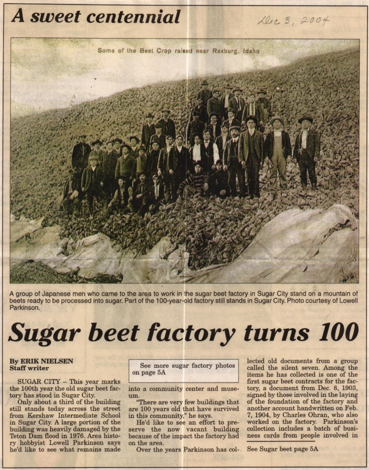

A look into the past
Sugar City was chartered in 1903 and incorporated under the general laws of Idaho in 1906. The Upper Snake River Valley was being developed into farms and ranches. Its volcanic soil and the cool summer nights of the region’s high elevation were ideal for growing potatoes – and sugar beets. Sugar City was laid out to be near the largest factory of the Utah & Idaho Sugar Company, built in 1904. The Union Pacific Railroad opened the region to national markets, not only for sugar but also for livestock, grains, potatoes, and timber.
Citizens no longer see the 100-pound bags of U&I sugar. Due to changes in technology and marketing, the sugar factory closed in 1942, having produced 405,000 tons of sweetness. Today, Sugar City is home to farmers, educators, businessmen, and workers in varied other vocations.
Statistics
Population in 2019: 1,452 (97% urban, 3% rural).
Population change since 2000: +16.9%
Average yearly rainfall: 14 in.
Average yearly snowfall: 42 in.